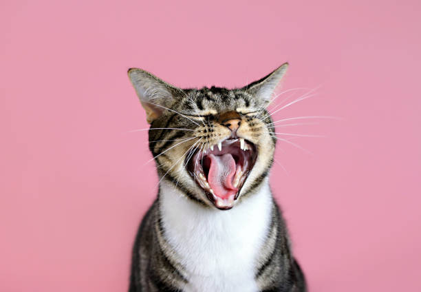
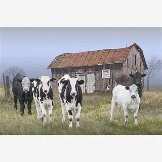

My images
Back
Welcome to my favorte images
Welcome to this part of the website here
you will be able to discover images that
are just for practice. Each image will have
its own discripstions to help low and blind
individuals to understand the photos.

Dogs, domesticated descendants of the gray
wolf, have earned their title as "man's
best friend" through millennia of
companionship and unwavering loyalty.
This long history has resulted in an
incredible diversity of breeds, each with
unique characteristics, from the
diminutive Chihuahua to the majestic Great
Dane. Beyond their varied appearances,
dogs share a remarkable capacity for love,
intelligence, and an uncanny ability to
connect with humans. Their trainability
and keen senses have made them invaluable
partners in various roles, from service
animals assisting those in need to search
and rescue dogs saving lives. However,
perhaps their most profound contribution
lies in their unwavering companionship,
offering unconditional love and a
comforting presence that enriches our
lives in countless ways.

Cats, those enigmatic and independent
companions, have captivated humans for
thousands of years. While also
domesticated, their relationship with us
differs from that of dogs, often
characterized by a more self-sufficient
and sometimes aloof demeanor. From the
sleek Siamese to the fluffy Persian, cats
exhibit a fascinating array of breeds,
each with distinct personalities and
physical traits. Known for their agility,
grace, and hunting prowess, cats possess
an innate curiosity and a strong sense of
territory. Though often perceived as
solitary creatures, cats form deep bonds
with their human companions, expressing
affection through purrs, head boops, and
playful antics. Whether they're chasing
laser pointers, napping in sunbeams, or
simply observing the world with their
mesmerizing gaze, cats bring a unique
blend of mystery and charm to our lives.

Cows, those gentle giants of the farm, are
domesticated mammals that play a crucial
role in agriculture and human society. As
herbivores, they possess a specialized
four-chamber stomach that allows them to
efficiently digest grasses and other plant
matter, converting them into energy and
essential nutrients. Cows are primarily
raised for their milk, which is a staple
in many diets, and their meat, a
significant source of protein. Beyond
these primary products, cows also provide
leather for various goods and even
contribute to the production of certain
medicines. From the iconic Holstein dairy
cow to the hardy Angus beef cattle,
diverse breeds have been developed to suit
various climates and production needs.
These social animals often form strong
bonds within their herds and exhibit a
range of behaviors, from the playful
antics of calves to the nurturing nature
of mothers.